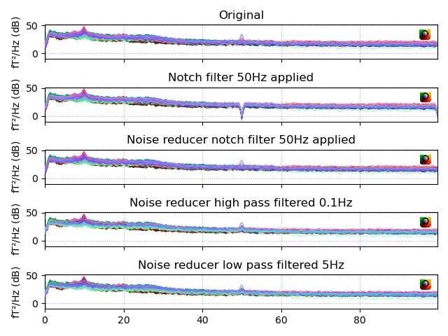

Note
Go to the end to download the full example code
Plot noise reducer¶
Script to show the application of noise reducer on jusample data.
Opening raw data file /Users/praveen.sripad/nanna_data/meg_analysis/jusample_meg/recordings/207184/sample_207184_rest_EC-raw.fif...
Range : 6782 ... 47472 = 10.000 ... 70.000 secs
Ready.
Reading 0 ... 40690 = 0.000 ... 60.000 secs...
NOTE: plot_psd() is a legacy function. New code should use .compute_psd().plot().
Effective window size : 3.020 (s)
/Users/praveen.sripad/seafile/repolib/mne/jumeg/examples/preprocessing/plot_noise_reducer.py:36: RuntimeWarning: (X, Y) fit (-0.4, 37.9) more than 20 mm from head frame origin
raw.plot_psd(fmin=0., fmax=100., tmin=None, tmax=60.,
Filtering raw data in 1 contiguous segment
Setting up band-stop filter
FIR filter parameters
---------------------
Designing a two-pass forward and reverse, zero-phase, non-causal bandstop filter:
- Windowed time-domain design (firwin) method
- Hamming window with 0.0194 passband ripple and 53 dB stopband attenuation
- Lower transition bandwidth: 0.50 Hz
- Upper transition bandwidth: 0.50 Hz
- Filter length: 4477 samples (6.602 s)
[Parallel(n_jobs=4)]: Using backend LokyBackend with 4 concurrent workers.
[Parallel(n_jobs=4)]: Done 14 tasks | elapsed: 1.0s
[Parallel(n_jobs=4)]: Done 208 tasks | elapsed: 1.2s
[Parallel(n_jobs=4)]: Done 248 out of 248 | elapsed: 1.2s finished
NOTE: plot_psd() is a legacy function. New code should use .compute_psd().plot().
Effective window size : 3.020 (s)
/Users/praveen.sripad/seafile/repolib/mne/jumeg/examples/preprocessing/plot_noise_reducer.py:46: RuntimeWarning: (X, Y) fit (-0.4, 37.9) more than 20 mm from head frame origin
raw_notch.plot_psd(fmin=0., fmax=100., tmin=None, tmax=60.,
Filtering raw data in 1 contiguous segment
Setting up band-stop filter
FIR filter parameters
---------------------
Designing a one-pass, zero-phase, non-causal bandstop filter:
- Windowed time-domain design (firwin) method
- Hann window with 0.0546 passband ripple and 44 dB stopband attenuation
- Lower transition bandwidth: 0.50 Hz
- Upper transition bandwidth: 0.50 Hz
- Filter length: 4205 samples (6.201 s)
[Parallel(n_jobs=1)]: Using backend SequentialBackend with 1 concurrent workers.
[Parallel(n_jobs=1)]: Done 1 out of 1 | elapsed: 0.0s remaining: 0.0s
[Parallel(n_jobs=1)]: Done 2 out of 2 | elapsed: 0.0s remaining: 0.0s
[Parallel(n_jobs=1)]: Done 3 out of 3 | elapsed: 0.0s remaining: 0.0s
[Parallel(n_jobs=1)]: Done 4 out of 4 | elapsed: 0.0s remaining: 0.0s
[Parallel(n_jobs=1)]: Done 23 out of 23 | elapsed: 0.0s finished
Rejecting epoch based on MAG : ['MEG 057']
Artefact detected in [39984, 40120]
Rejecting epoch based on MAG : ['MEG 057']
NOTE: plot_psd() is a legacy function. New code should use .compute_psd().plot().
Effective window size : 3.020 (s)
/Users/praveen.sripad/seafile/repolib/mne/jumeg/examples/preprocessing/plot_noise_reducer.py:54: RuntimeWarning: (X, Y) fit (-0.4, 37.9) more than 20 mm from head frame origin
raw_nr_notch.plot_psd(fmin=0., fmax=100., tmin=None, tmax=60.,
Filtering raw data in 1 contiguous segment
Setting up high-pass filter at 0.1 Hz
FIR filter parameters
---------------------
Designing a one-pass, zero-phase, non-causal highpass filter:
- Windowed time-domain design (firwin) method
- Hann window with 0.0546 passband ripple and 44 dB stopband attenuation
- Lower passband edge: 0.10
- Lower transition bandwidth: 0.10 Hz (-6 dB cutoff frequency: 0.05 Hz)
- Filter length: 21025 samples (31.003 s)
[Parallel(n_jobs=1)]: Using backend SequentialBackend with 1 concurrent workers.
[Parallel(n_jobs=1)]: Done 1 out of 1 | elapsed: 0.0s remaining: 0.0s
[Parallel(n_jobs=1)]: Done 2 out of 2 | elapsed: 0.0s remaining: 0.0s
[Parallel(n_jobs=1)]: Done 3 out of 3 | elapsed: 0.0s remaining: 0.0s
[Parallel(n_jobs=1)]: Done 4 out of 4 | elapsed: 0.0s remaining: 0.0s
[Parallel(n_jobs=1)]: Done 23 out of 23 | elapsed: 0.0s finished
Rejecting epoch based on MAG : ['MEG 057']
Artefact detected in [39984, 40120]
Rejecting epoch based on MAG : ['MEG 057']
NOTE: plot_psd() is a legacy function. New code should use .compute_psd().plot().
Effective window size : 3.020 (s)
/Users/praveen.sripad/seafile/repolib/mne/jumeg/examples/preprocessing/plot_noise_reducer.py:63: RuntimeWarning: (X, Y) fit (-0.4, 37.9) more than 20 mm from head frame origin
raw_nr2.plot_psd(fmin=0., fmax=100., tmin=None, tmax=60.,
Filtering raw data in 1 contiguous segment
Setting up low-pass filter at 5 Hz
FIR filter parameters
---------------------
Designing a one-pass, zero-phase, non-causal lowpass filter:
- Windowed time-domain design (firwin) method
- Hann window with 0.0546 passband ripple and 44 dB stopband attenuation
- Upper passband edge: 5.00 Hz
- Upper transition bandwidth: 2.00 Hz (-6 dB cutoff frequency: 6.00 Hz)
- Filter length: 1053 samples (1.553 s)
[Parallel(n_jobs=1)]: Using backend SequentialBackend with 1 concurrent workers.
[Parallel(n_jobs=1)]: Done 1 out of 1 | elapsed: 0.0s remaining: 0.0s
[Parallel(n_jobs=1)]: Done 2 out of 2 | elapsed: 0.0s remaining: 0.0s
[Parallel(n_jobs=1)]: Done 3 out of 3 | elapsed: 0.0s remaining: 0.0s
[Parallel(n_jobs=1)]: Done 4 out of 4 | elapsed: 0.0s remaining: 0.0s
[Parallel(n_jobs=1)]: Done 23 out of 23 | elapsed: 0.0s finished
Rejecting epoch based on MAG : ['MEG 057']
Artefact detected in [39984, 40120]
Rejecting epoch based on MAG : ['MEG 057']
NOTE: plot_psd() is a legacy function. New code should use .compute_psd().plot().
Effective window size : 3.020 (s)
/Users/praveen.sripad/seafile/repolib/mne/jumeg/examples/preprocessing/plot_noise_reducer.py:71: RuntimeWarning: (X, Y) fit (-0.4, 37.9) more than 20 mm from head frame origin
raw_nr.plot_psd(fmin=0., fmax=100., tmin=None, tmax=60.,
/Users/praveen.sripad/seafile/repolib/mne/jumeg/examples/preprocessing/plot_noise_reducer.py:75: UserWarning: This figure includes Axes that are not compatible with tight_layout, so results might be incorrect.
plt.tight_layout()
import os
import os.path as op
import numpy as np
import matplotlib.pyplot as plt
from jumeg.jumeg_noise_reducer import noise_reducer
import mne
plt.ion()
# load the jumeg sample data (has to be BTI)
if os.environ.get('JUSAMPLE_MEG_PATH'):
data_dir = os.environ['JUSAMPLE_MEG_PATH']
else:
print('Data unavailable, skipping.')
sys.exit()
subject = '207184'
raw_fname = op.join(data_dir, 'recordings', subject,
'sample_207184_rest_EC-raw.fif')
raw = mne.io.Raw(raw_fname, preload=True)
fig, (ax1, ax2, ax3, ax4, ax5) = plt.subplots(5, 1, sharex=True, sharey=True)
picks = mne.pick_types(raw.info, meg='mag', exclude='bads')
raw.plot_psd(fmin=0., fmax=100., tmin=None, tmax=60.,
n_fft=None, picks=picks, ax=ax1);
ax1.set_title('Original')
# notch filter
raw_notch = raw.copy().notch_filter(np.arange(50, 251, 50), picks=picks,
filter_length='auto',
notch_widths=None, n_jobs=4, method='fir',
phase='zero-double',
fir_window='hamming', fir_design='firwin')
raw_notch.plot_psd(fmin=0., fmax=100., tmin=None, tmax=60.,
n_fft=None, picks=picks, ax=ax2);
ax2.set_title('Notch filter 50Hz applied')
# powerline removal using noise_reducer
raw_nr_notch = noise_reducer(raw_fname, raw=raw.copy(), detrending=False,
reflp=None, refhp=None, refnotch=[50., 100., 150.],
return_raw=True, verbose=False)
raw_nr_notch.plot_psd(fmin=0., fmax=100., tmin=None, tmax=60.,
n_fft=None, picks=picks, ax=ax3);
ax3.set_title('Noise reducer notch filter 50Hz applied')
# remove high freq noise (>0.1Hz) from ref channels
raw_nr2 = noise_reducer(raw_fname, raw=raw_nr_notch, detrending=False,
reflp=None, refhp=0.1, refnotch=None,
return_raw=True, verbose=False)
raw_nr2.plot_psd(fmin=0., fmax=100., tmin=None, tmax=60.,
n_fft=None, picks=picks, ax=ax4);
ax4.set_title('Noise reducer high pass filtered 0.1Hz')
# remove low freq noise (<5Hz) from ref channels
raw_nr = noise_reducer(raw_fname, raw=raw_nr2, detrending=False,
reflp=5., refhp=None, refnotch=None,
return_raw=True, verbose=False)
raw_nr.plot_psd(fmin=0., fmax=100., tmin=None, tmax=60.,
n_fft=None, picks=picks, ax=ax5);
ax5.set_title('Noise reducer low pass filtered 5Hz')
plt.tight_layout()
plt.show()
Total running time of the script: ( 0 minutes 7.594 seconds)